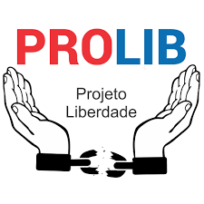

A caminho da recuperação a partir da espiritualidade
O sucesso do tratamento de um dependente requer o apoio de uma comunidade inteira. Na ProLib compreendemos o sofrimento e as dores da dependência e a força que pode ser ganhada por meio de um tratamento bem-sucedido. A área onde o dependente fica também é muito importante para o desenvolvimento da recuperação. Conheça um pouco do nosso espaço.
Sobre nós
A ProLib é uma comunidade terapêutica evangélica que busca a resgatar a dignidade humana oferecendo tratamento humanizado de dependentes químicos São Paulo . Nosso objetivo é capacitar sua recuperação e seu compromisso com uma vida significativa. Nossa equipe de cuidadores está aqui para orientá-lo em todo o processo e garantir que você recebe todo apoio de que precisa.
>Se você, ou alguém que você conhece, sofre de alguma dependência, é possível que exista um problema muito maior. O(A) ProLib adota uma abordagem holística e trata o todo, não apenas a dependência. Utilizamos nosso próprio programa para ajudar pessoas a superar sua dependência em São Paulo há mais de 20 anos. Nunca é tarde demais para nos procurar e pedir ajuda.